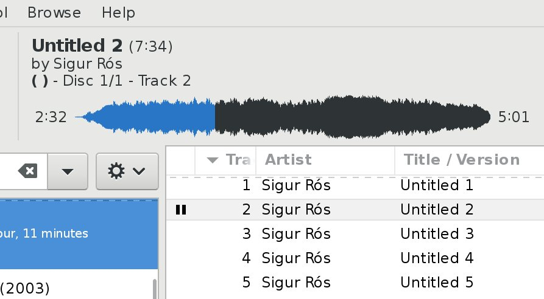

Quod Libet 3.9 Highlights¶
(Quod Libet is a audio library tagger, manager, and player for Linux / Windows / macOS)
For a detailed changelog see https://quodlibet.readthedocs.io/en/latest/changelog.html#release-3-9-0
New plugin by @dvillevalois for only showing the menu bar when pressing Alt. https://github.com/quodlibet/quodlibet/pull/2263.
media/2017-02-28_11.03.50-836532357926645760-gif-video-1.mp4
QL will now show you a stack trace on the next start in case it crashed. https://github.com/quodlibet/quodlibet/commit/64ee54fea156694844a720f9b11d78e2e95d64ad

Support for the “!=” operator in queries, by @ThirdDeclension https://github.com/quodlibet/quodlibet/commit/3083bf07835076e2742f7393fc9db0c5ca322d4b

We now run our tests on Ubuntu 14.04 and 16.04 on each commit, thanks to travis-ci and docker https://github.com/quodlibet/quodlibet/pull/2269

New “~#channels” tag exposing the channel count https://github.com/quodlibet/quodlibet/commit/720b339c306655bbb04970bbee4546647a6a0abb

“~#encoding” now includes the lame encoding quality for MP3 files https://github.com/quodlibet/quodlibet/commit/1ea3eb3c45d5d9f31f6ebb1a54d9f8bf66e69d3e
Next QL will include a plugin for changing the user interface language https://github.com/quodlibet/quodlibet/pull/2154
media/2017-03-01_09.57.21-836878012431888384-gif-video-1.mp4
Since 3.8.1 our MPD plugin also works with the M.A.L.P. Android client https://github.com/gateship-one/malp

New bpm tap plugin, by @dvillevalois https://github.com/quodlibet/quodlibet/pull/2264
media/2017-03-01_10.21.07-836883996348977153-gif-video-1.mp4
The waveform seekbar now looks better in HiDPI mode https://github.com/quodlibet/quodlibet/pull/2261
Next Quod Libet will send errors and crashes to https://sentry.io . Thanks @getsentry

Panes in the paned browser can now be resized. https://github.com/quodlibet/quodlibet/pull/2301
media/2017-03-14_15.55.47-841679257101316097-gif-video-1.mp4
Some grouping for our evergrowing list of plugins. https://github.com/quodlibet/quodlibet/pull/2218
media/2017-03-17_19.16.58-842817051643252737-gif-video-1.mp4
Native file chooser dialogs on Windows. https://github.com/quodlibet/quodlibet/pull/2324

New checkbox for stopping after the queue runs out: https://github.com/quodlibet/quodlibet/pull/2340

Making things ready for a new release. Some changes the queue UI